import matplotlib.pyplot as pltLecture 7 - Data Visualization with Matplotlib and Seaborn


- 7.1 Data Visualization with Matplotlib
- 7.2 Data Visualization with Seaborn
- Appendix: Additional Matplotlib Features
- References
7.1 Data Visualization with Matplotlib
7.1.1 Introduction to Matplotlib
Matplotlib is a plotting library for Python created by John D. Hunter in 2003. Matplotlib is among the most widely used plotting libraries and is often the preferred choice for many data scientists and machine learning practitioners. The Matplotlib gallery on the official website at https://matplotlib.org/gallery/index.html contains code examples for creating various kinds of plots.
Matplotlib has two general interfaces for plotting: a state-based approach that is similar to Matlab’s way of plotting, and a more Pythonic object-oriented approach. We will start with discussing the state-based approach, and continue afterward with the object-oriented approach.
The main plotting functions of Matplotlib are contained in the pyplot module, which is almost always imported as plt.
7.1.2 The State-based Approach
As we mentioned, the state-based approach was developed based on the way plotting is done in Matlab. I.e., we call different functions that each take care of one aspect of the plot.
Let’s create a few plots to show how the state-based approach works.
y = [2, 4, 1, 6, 7]
plt.plot(y, 'o') # plot the data
plt.show() # this line visualizes the plot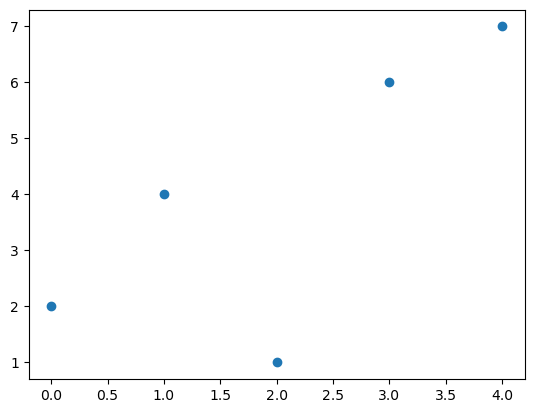
As you can see, the state-based approach includes a function call to plt.plot and afterward we call plt.show to show the plot in the notebook (or, if we run this code from a script, the plot will show in an external image viewer ). Note that technically the plt.show call is not necessary to render the plot in Jupyter notebooks, but it is recommended to do it anyway as it is good practice.
In the above plot we provided only the list y, and Matplotlib plotted each value using the indices in the list for the x-axis. I.e., the value 4 has coordinate 1 on the x-axis, and value 6 has coordinate 3 on the x-axis. The string 'o' in plt.plot indicates that we wanted to plot the values with circle markers. If we omitt this argument, Matplotlib will plot a line by default.
Also, when working with Jupyter notebooks, each line of code that is part of the same plot should be defined in the same cell. Otherwise, the elements of the plot won’t be included in the same figure.
If we pass two arguments to plt.plot, then the first argument will represent the positions on the x-axis, and the second argument will represent the positions on the y-axis. This is shown in the next cell.
x = [3, 4, 5, 6, 7, 8, 9]
y = [1, 2, 3, 4, 5, 6, 7]
plt.plot(x, y) # plot the data
plt.xlabel('x', fontsize=12) # set the x-axis label
plt.ylabel('y', fontsize=12) # set the y-axis label
plt.show() # this line visualizes the plot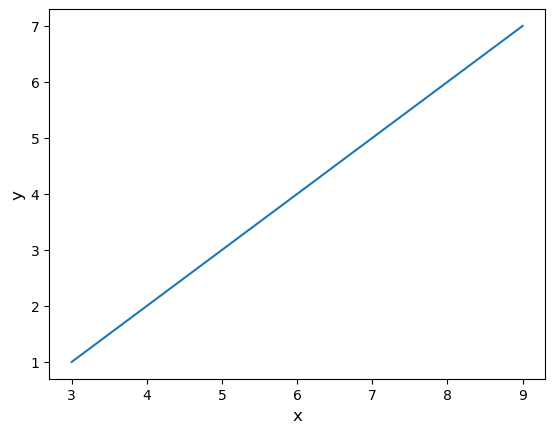
Axis Labels
When graphing data, it is always a good idea to provide axis labels. In the above graph, we used plt.xlabel and plt.ylabel to provide the corresponding labels for the x-axis and y-axis. And, we can also control the size of axes labels by assigning a value to the keyword fontsize.
Controlling Line Properties
The plt.plot function is the most basic function to create any plot of paired data points (x, y). By default, it creates a line plot (as shown above), but there are many optional parameters in plt.plot allowing to create many different variations. For example, instead of a line, we can plot the data as separate red markers by specifying the marker format in the third argument 'o' to indicate points/circles as markers, and the color by setting the argument c for color to 'red'.
plt.plot(x, y, 'o', c='red')
plt.show()
## This above plt.plot function is equivalent to:
# plt.plot(x, y, marker='o', color='red', linestyle='')
## And is also equivalent to:
# plt.plot(x, y, 'ro')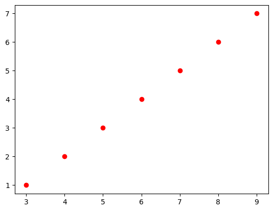
In the next cell, the third argument is related to the line format and may be used to specify three things at once: whether we want markers (and which type of marker), whether we want a line (and which type of line), and which color the markers/line should have. So, to create a blue line, you may specify '-b'. To create a yellow ('y') dashes-dots line ('-.') with star markers ('*'), we can use '*-.y'.
plt.plot(x, y, '*-.y')
plt.show()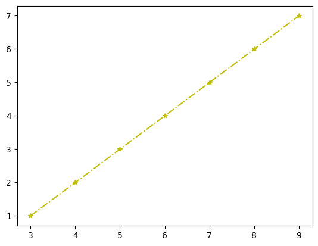
Matplotlib also allows defining colors by using the color keyword argument, where several basic colors can be defined with their names (e.g., “red” below), or many colors can be definted with their RGB hex codes.
import numpy as np
x = np.linspace(0, 5, 10)
plt.plot(x, x+1, color="red")
plt.plot(x, x+2, color="#1155dd") # RGB hex code for a bluish color
plt.plot(x, x+3, color="#15cc55") # RGB hex code for a greenish color
plt.show()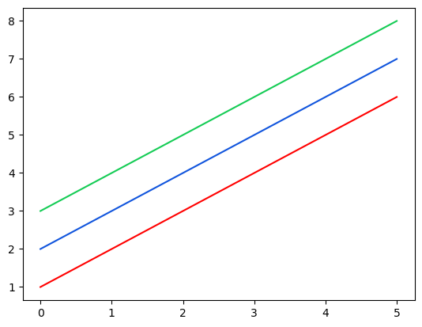
The supported color abbreviations with the single letter codes include:
| character | color |
|---|---|
| b | blue |
| g | green |
| r | red |
| c | cyan |
| m | magenta |
| y | yellow |
| k | black |
| w | white |
The formats for line styles include the following:
| character | description |
|---|---|
| - | solid line style |
| – | dashed line style |
| -. | dash-dot line style |
| : | dotted line style |
The following symbols can be used to specify markers:
| character | description |
|---|---|
| . | point marker |
| , | pixel marker |
| o | circle marker |
| v | triangle_down marker |
| ^ | triangle_up marker |
| < | triangle_left marker |
| > | triangle_right marker |
| 1 | tri_down marker |
| 2 | tri_up marker |
| 3 | tri_left marker |
| 4 | tri_right marker |
| s | square marker |
| p | pentagon marker |
| * | star marker |
| h | hexagon1 marker |
| H | hexagon2 marker |
| + | plus marker |
| x | x marker |
| D | diamond marker |
| d | thin_diamond marker |
| ’ | vline marker |
| **_** | hline marker |
Line and Marker Styles
We can also use other keywords to enter various other information in plt.plot. To change the line width, we can use the linewidth or lw keyword argument. The line style can be selected using the linestyle or ls keyword arguments. Similarly, the marker type and marker size can be selected using the marker and markersize keyword arguments.
plt.figure(figsize=(12,6))
plt.plot(x, x+1, color="blue", linewidth=0.5)
plt.plot(x, x+2, color="blue", linewidth=1.5)
plt.plot(x, x+3, color="blue", linewidth=2.0)
plt.plot(x, x+4, color="blue", linewidth=4.0)
# possible linestyle options ‘-‘, ‘--’, ‘-.’, ‘:’
plt.plot(x, x+5, color="red", lw=2, linestyle='-')
plt.plot(x, x+6, color="red", lw=2, ls='-.')
plt.plot(x, x+7, color="red", lw=2, ls=':')
# possible marker symbols: marker = '+', 'o', '*', 's', ',', '.', '1', '2', '3', '4', ...
plt.plot(x, x+9, color="green", ls='', marker='+')
plt.plot(x, x+10, color="green", ls='', marker='o')
plt.plot(x, x+11, color="green", ls='', marker='s')
plt.plot(x, x+12, color="green", ls='', marker='1')
# marker size and color
plt.plot(x, x+13, color="purple", ls='', marker='o', markersize=2)
plt.plot(x, x+14, color="purple", ls='', marker='o', markersize=4)
plt.plot(x, x+15, color="purple", ls='', marker='o', markersize=8, markerfacecolor="red")
plt.plot(x, x+16, ls='', marker='s', markersize=8, markerfacecolor="yellow", markeredgewidth=2, markeredgecolor="blue")
plt.show()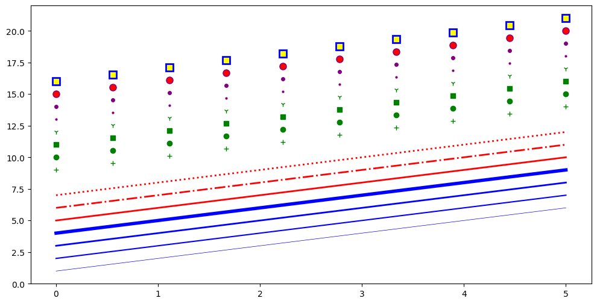
Multiple Lines in a Plot
We can plot multiple lines within a single plot, by calling plt.plot (or any other plotting function) multiple times. Below, we used two plt.plot functions to plot the squared values in the same figure.
Legend
Importantly, we can include a legend showing what each line represents using plt.legend. For the legend, we pass a list or tuple of legend strings for the previously defined lines or curves. For the legend to be displayed correctly, the order of the labels ['y', 'y squared'] needs to match the order of the plotting calls. We can also specify the preferred location of the legend with the keyword loc.
plt.plot(x, x, '*b') # only plot markers (*) in blue
plt.plot(x, x**2, '^--y') # plot both markers (^) and a dashed line (--) in yellow
# Note that the plt.legend function call should come *after* the plotting calls
# and you should give it a *list* with strings
plt.legend(['y', 'y squared'], loc='upper left')
plt.show()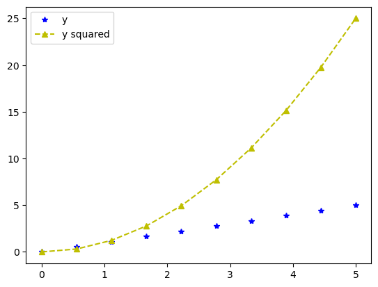
Another method for adding a legend is to use the label='label_text' keyword argument when plots are added to the figure, and then use the legend method without arguments, as shown in the code below. The advantage of this method is that if lines/curves are added or removed from the figure, the legend is automatically updated accordingly.
One more thing to notice in the plot below is that when we plot multiple items in the same figure, if we don’t specify the format and color, Matplotlib will automatically choose a different color for the different items (first one is blue, second one is orange, third one is green, etc.).
plt.plot(x, x, label='y')
plt.plot(x, x**2, label='y_square')
plt.plot(x, x**3, label='y_cube')
plt.legend()
plt.show()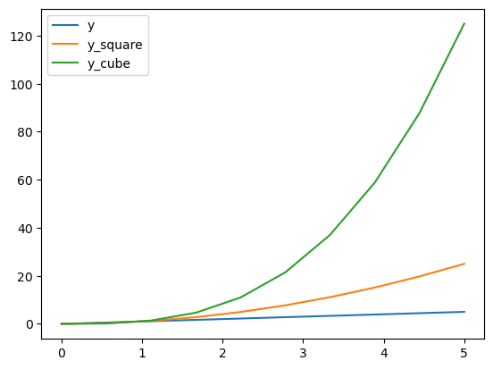
Anatomy of a Figure
A general anatomy of a figure is shown below depicting the different items and properties of a figure.
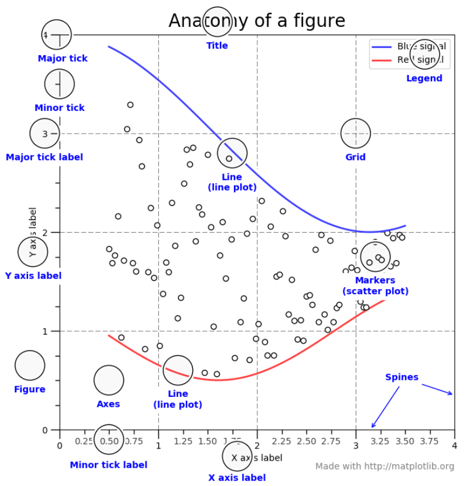
Figure source: Reference [3].Figure Title, Ticks, Tick Labels
Matplotlib provides various functions to modify figures. For instance, if we wish we can add a title with plt.title or change the default ticks and tick labels using plt.xticks (for the x-axis ticks/tick labels) and plt.yticks (for the y-axis ticks/tick labels). An example follows below, which shows how we can set custom tick labels for each tick position.
plt.title("Plot with modified x-axis ticks and tick labels!", fontsize=12)
plt.plot(x, x**2)
plt.xticks([0, 2, 4, 6], ['0th', '2nd', '4th', '6th']) # a list of x-axis positions, followed by a list of x-tick labels
plt.grid(True)
plt.show()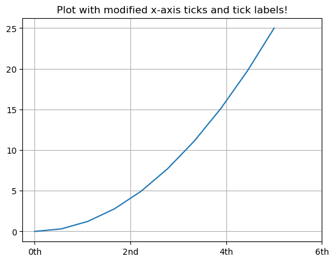
Range
Also, we can control the range of the axes by the functions plt.xlim and plt.ylim.
plt.plot(x, x**2)
plt.xlim(-1, 8)
plt.ylim(-1, 28)
plt.show()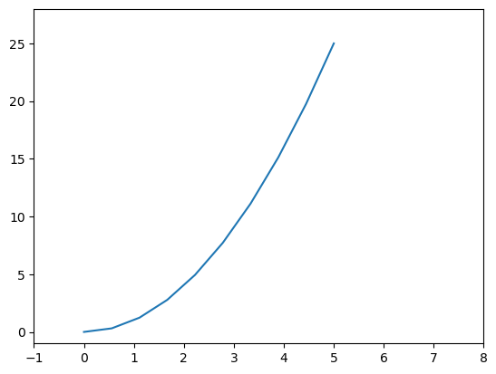
Similarly, we can control the range with the plt.axis() function which takes a list of arguments [xmin, xmax, ymin, ymax].
plt.plot(x, x**2)
plt.axis([-1, 8, -1, 28])
plt.show()
7.1.3 Figure Size, Aspect Ratio, and DPI
Matplotlib allows to specify the aspect ratio, DPI (dots-per-inch resolution), and figure size by calling the plt.figure function, and using the figsize and dpi keyword arguments. figsize is a tuple of the width and height of the figure in inches, and dpi is the dots-per-inch (pixel per inch) resolution. The larger the DPI, the larger the resolution of the figure.
If we don’t include any arguments in plt.figure, Matplotlib creates a new figure with default size of 6.4 x 4.8 inches, and a default DPI of 100.
The following example is used to create an 8x4 inches figure (width x height) with 100 DPI, that is, the figure is 800x400 pixels.
plt.figure(figsize=(8,4), dpi=100)
plt.plot(x, x)
plt.plot(x, x**2)
plt.plot(x, x**3)
plt.legend(['y', 'y square', 'y_cube'])
plt.show()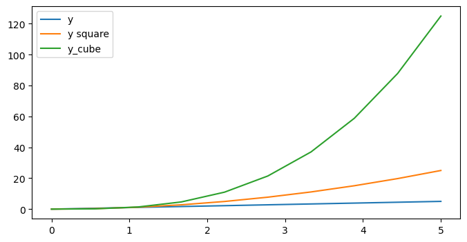
Similarly, the following figure is 2x6 inches (width x height) with 100 DPI, i.e., it is 200x600 pixels.
plt.figure(figsize=(2,6), dpi=100)
plt.plot(x, x)
plt.plot(x, x**2)
plt.plot(x, x**3)
plt.legend(['y', 'y square', 'y_cube'])
plt.show()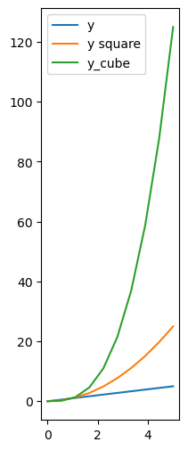
7.1.4 Saving Figures
To save a figure to a file we can use the plt.savefig function with the name of the figure as argument. By using the .png file suffix in the name "figure_1.png" below, we chose to save the figure in the PNG file format.
plt.figure(figsize=(4,4))
plt.plot(x, x)
plt.plot(x, x**2)
plt.plot(x, x**3)
plt.legend(['y', 'y square', 'y_cube'])
# plt.show() - this line is not needed when saving a figure
plt.savefig("figure_1.png")
We can also optionally specify the DPI of the figure in plt.savefig(), as well as choose another output format (e.g., JPG).
plt.figure(figsize=(4,4))
plt.plot(x, x)
plt.plot(x, x**2)
plt.plot(x, x**3)
plt.legend(['y', 'y square', 'y_cube'])
plt.savefig("figure_2.jpg", dpi=200)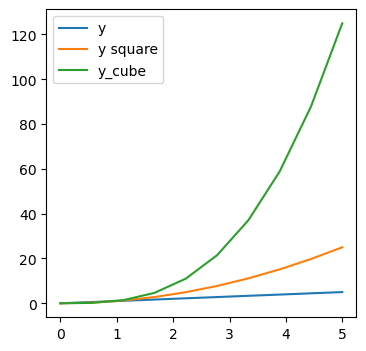
Matplotlib can generate high-quality figures in various formats, including PNG, JPG, EPS, SVG, PGF, and PDF. The file format can be conveniently specified via the file suffix (.eps, .svg, .jpg, .png, .pdf, .tiff). Using a vector graphics format (.eps, .svg, .pdf) is often recommended, because it usually results in smaller file sizes than bitmap graphics (.jpg, .png, .bmp, .tiff) and does not have a limited resolution.
plt.figure(figsize=(4,4))
plt.plot(x, x)
plt.plot(x, x**2)
plt.plot(x, x**3)
plt.legend(['y', 'y square', 'y_cube'])
plt.savefig("figure_3.pdf", dpi=200)
7.1.5 Other Plotting Functions
Scatter Plots
There are many different plotting functions in Matplotlib besides plt.plot. Scatterplots can be created using plt.scatter.
x2 = np.linspace(0, 10, 100)
plt.scatter(x2, np.sin(x2)) # This is equivalent to plt.plot(x, y, 'o') !
plt.title("Scatterplot", fontsize=12)
plt.show()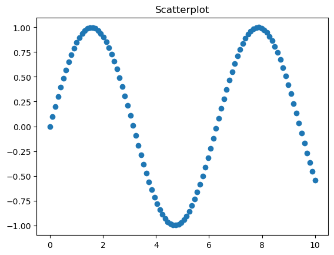
plt.scatter(x2, np.sin(x2), color='green', marker='+')
plt.show()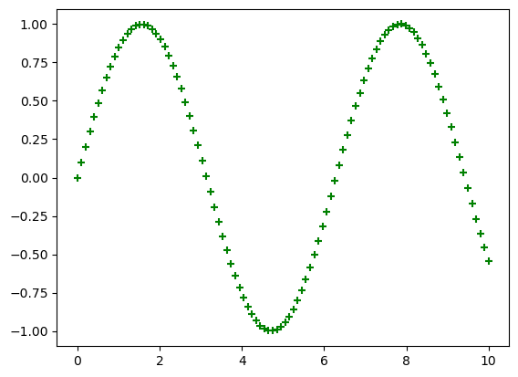
Bar Plots
Bar graphs are created using plt.bar. We pass in a list of values or strings for the x-axis, and a list of heights for the bars on the y-axis. We can optionally set a color for the bars (and if we don’t, the default color is blue).
# First argument determines the location of the bars on the x-axis
# and the second argument determines the height of the bars
bar_labels = ['bar 1', 'bar 2', 'bar 3']
means = [5, 8, 10]
plt.bar(bar_labels, means)
plt.title("Bar Plot", fontsize=12)
plt.show()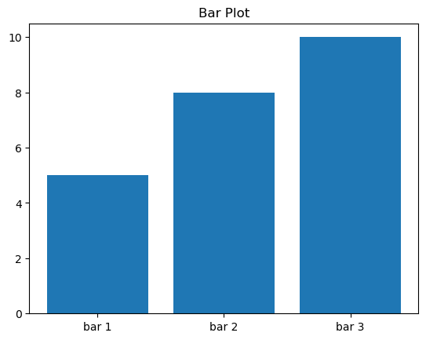
We can also add error bars to the bar plot using the yerr (y-error) keyword in plt.bar.
bar_labels = [1, 2, 3]
means = [5, 8, 10]
variances = [1, 2, 4]
plt.bar(bar_labels, means, yerr=variances, color='gold')
plt.title("Bar Plot", fontsize=12)
plt.show()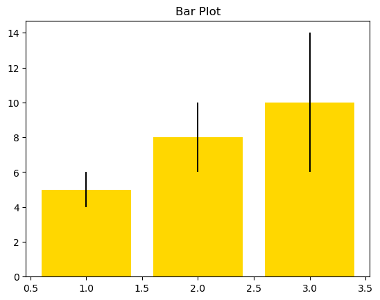
And, we can create horizontal bar plots using plt.barh. In this case, the first argument is a list of positions on the y-axis, and the second argument is a list of values of the bars along the x-axis.
labels = ['Electric', 'Solar', 'Diesel', 'Unleaded']
values = [2, 1, 4, 6]
plt.barh(labels, values, color='cyan')
plt.show()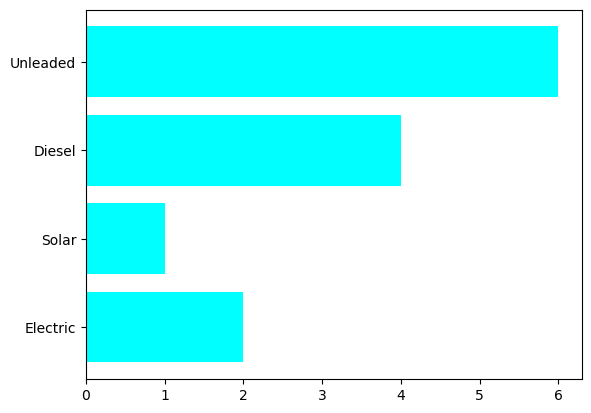
Histograms
The function plt.hist is used for this purpose.
# Let's generate some random data from normal distribution
random_norm = np.random.randn(1000)
plt.title("Histogram", fontsize=12)
plt.hist(random_norm)
plt.xlabel("Value", fontsize=10)
plt.ylabel("Frequency", fontsize=10)
plt.show()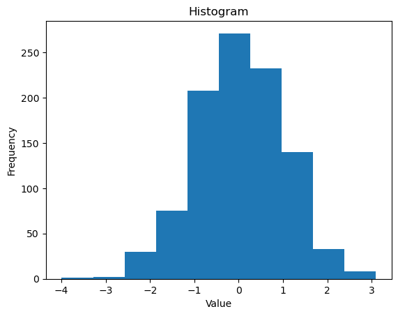
Histograms of 2 normal distributions with different mean and variance values are shown below. Note that the alpha keyword controls the transparency level of the histograms, where 0.3 corresponds to 30% transparency. The bins keyword controls the number of bins to divide the values in the distributions.
# Mean 0 and variance 20
random_norm1 = 0 + 20*np.random.randn(1000)
# Mean 15 and variance 10
random_norm2 = 15 + 10*np.random.randn(1000)
# fixed bin size
bins = np.arange(-100, 100, 5)
plt.hist(random_norm1, bins=bins, facecolor='c', alpha=0.5)
plt.hist(random_norm2, bins=bins, facecolor='r', alpha=0.3)
plt.show()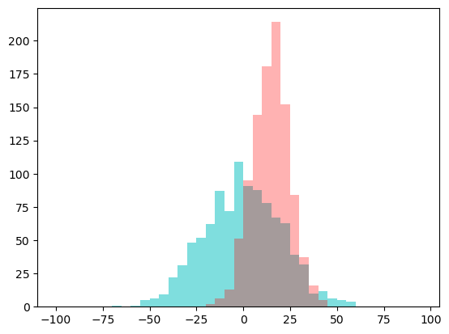
Boxplots
The function plt.boxplot can be used to plot the distribution of data with a boxplot, showing the median of the data (the vertical line in the middle), the interquartile ranges (i.e., the ends of the boxes represent 25 and 75 percentiles), and the minimum and maximum values of the data (that is, the far end of the lines extending from the boxes, referred to as “whiskers”). The values outside of the whiskers are outliers in the data.
Boxplots for the two random distributions from the previous example are shown below.
plt.boxplot([random_norm1, random_norm2])
plt.show()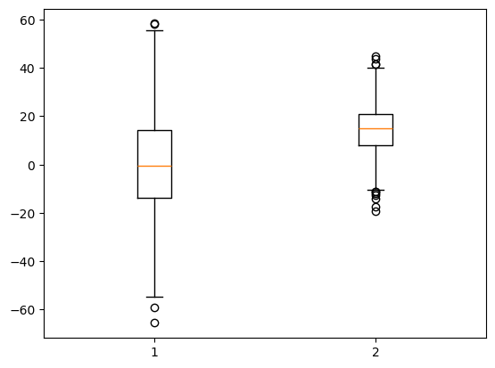
7.1.6 Multiple Plots in Figures
Matplotlib allows creating several plots in the same figure. This allows working with multiple datasets at once. There are several different ways to do this. The simplest way is to create a new figure to add the second plt.plot function.
Here we created two line plots. When we called plt.figure(2), it created a top-level container for the plt.plot function that follows after it. Thus, the first plot is added to figure one (which is created automatically when plt.plot is called), and the second plot is added to figure 2. When we call show() at the end, Matplotlib will open two windows with each graph shown separately.
numbers1 = [2, 4, 1, 6]
numbers2 = [5, 1, 10, 3]
plt.plot(numbers1, '*b')
second_plot = plt.figure(2)
plt.plot(numbers2, 'or')
plt.show()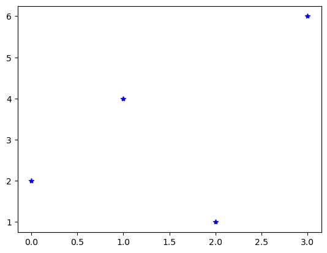
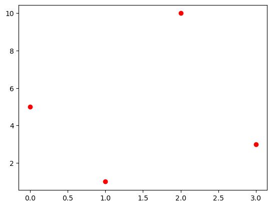
Matplotlib also supports adding two or more plots to a single figure, by using the function subplot. The arguments in subplot define the number of rows, the number of columns, and the number of each subplot. That is, in the figure below there is one row and two columns of subplots, corresponding to the arguments 1,2 in plt.subplot(), and the last argument is the number of the subplot.
plt.subplot(1,2,1)
plt.plot(x, x**2, 'r--')
plt.subplot(1,2,2)
plt.plot(x, x**3, 'g*-');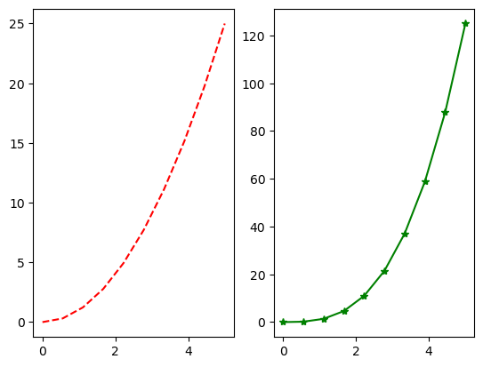
In the following figure, the right plots use a logarithmic scale with the function plt.yscale("log"). One more thing to note is that the arguments in plt.subplots do not need to be separated by commas. E.g., the arguments in the first line can be passed either as 221 or 2,2,1.
plt.subplot(221)
plt.plot(x, x**2)
plt.title("Normal scale (x^2)")
plt.subplot(222)
plt.plot(x, x**2)
plt.yscale("log")
plt.title("Logarithmic scale (x^2)")
plt.subplot(223)
plt.plot(x, np.exp(x))
plt.title("Normal scale (exp(x))")
plt.subplot(224)
plt.plot(x, np.exp(x))
plt.yscale("log")
plt.title("Logarithmic scale (exp(x))")
plt.tight_layout()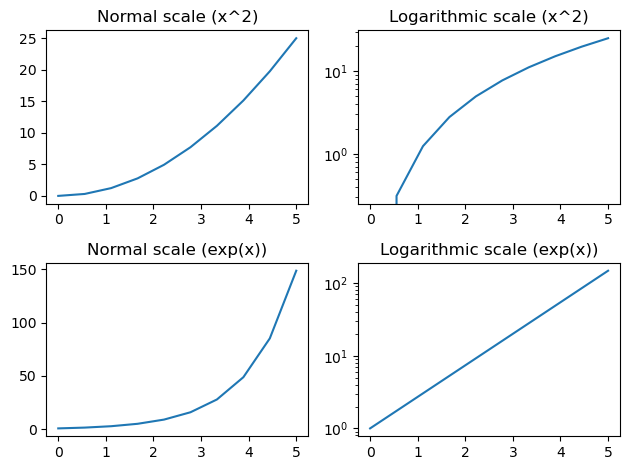
7.1.7 The Object-oriented Approach
The state-based plotting approach in Matplotlib is easy to use and pretty straightforward, however for creating more complex visualizations, the alternative object-oriented approach provides advantages.
The main idea of the object-oriented approach in Matplotlib is to create objects to which we can apply methods. In this approach, each Matplotlib plot consists of a Figure object and one or more Axes objects. The Figure object essentially represents the entire canvas that defines the figure. The Axes objects contain the actual visualizations that we want to include in the Figure. This is shown below. However, note that an Axes object is different than the axes (x-axis and y-axis) of a plot. And, there may be one or multiple Axes objects within a given Figure (e.g., two line plots next to each other).
The real advantage of this approach becomes apparent when more than one figure is created, or when a figure contains more than one subplot.
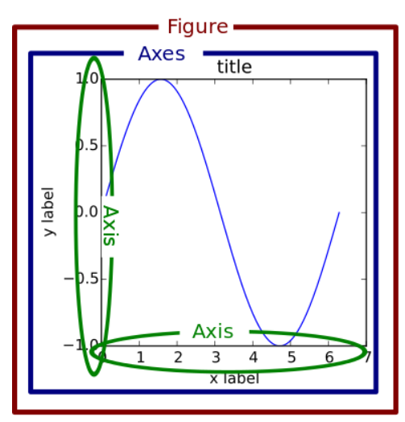
Figure source: Reference [3].To use the object-oriented approach, we create a new Figure object that defines the canvas to draw on by using plt.figure(). In the next cell, we passed the newly created Figure instance to the fig name. As we explained before, plt.figure can take optional arguments like figsize (width and height in inches) and dpi.
Next, from the Figure class instance fig we create a new Axes instance axes using the add_axes method. In the object-oriented approach, plotting is done through the methods of the newly created axes object, instead of the function plot (or scatter, bar) from the pyplot module. And, even in the object-oriented approach we need the function plt.show to render the figure.
fig = plt.figure()
axes = fig.add_axes([0, 0, 0.8, 0.8]) # left, bottom, width, height (range 0 to 1)
axes.plot(x, x**2, 'r')
axes.set_xlabel('x')
axes.set_ylabel('y')
axes.set_title('title')
plt.show()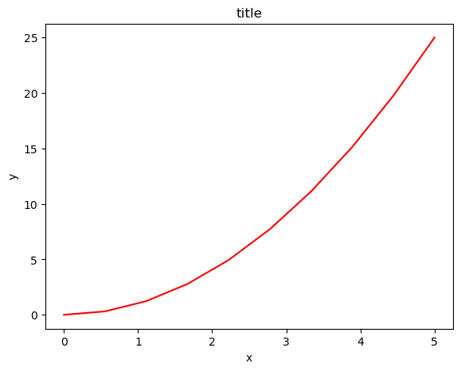
Basically all functions from the state-based approach are available as methods in the object-oriented approach. Also, some pyplot functions are prefixed with set_ in the object-oriented interface. For instance, plt.title or plt.xlabel functions used with the state-based approach, in the object-oriented approach are replaced with axes.set_title or axes.set_xlabel.
The advantage of the object-oriented approach is that it enables having full control of where the plot axes are placed, and we can easily add more than one axis to the figure.
fig = plt.figure()
axes1 = fig.add_axes([0, 0, 0.8, 0.8]) # main axes
axes2 = fig.add_axes([0.1, 0.4, 0.4, 0.3]) # inset axes
# main figure
axes1.plot(x, x**2, 'r')
axes1.set_xlabel('x')
axes1.set_ylabel('y')
axes1.set_title('Main Figure Title', fontsize=12)
# insert
axes2.plot(x**2, x, 'g')
axes2.set_xlabel('y')
axes2.set_ylabel('x')
axes2.set_title('Insert Figure Title', fontsize=10)
fig.savefig("figure_4.jpg", dpi=200)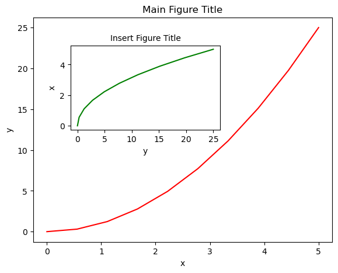
In the above example, we saved the figure using the method fig.savefig, instead of plt.savefig that we used in the state-based approach.
Instead of creating the Figure and Axes objects separately, we can use the function plt.subplots to create them both at the same time, as in the next example. As the name suggests, this function also allows to create multiple subplots where each subplot corresponds to one Axes object). The plt.subplots function accepts as arguments the number of rows and columns nrows and ncols, and optionally the figure size.
fig, axes = plt.subplots(nrows=1, ncols=3, figsize=(10, 3))
plt.show()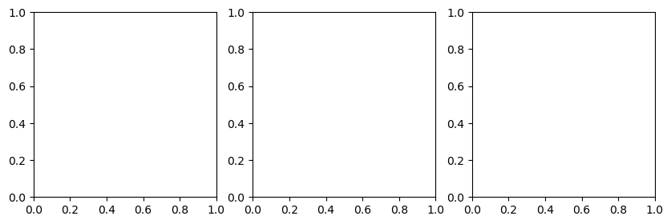
Let’s check out the type of the variable axes in the above code.
type(axes)numpy.ndarrayWhen we create a figure with more than one Axes object, the function plt.subplots returns axes as a numpy ndarray. To access the individual Axes objects from the numpy array, we can index them axes[0], axes[1], as in the next cell.
fig, axes = plt.subplots(nrows=1, ncols=3, figsize=(10, 3))
axes[0].plot(x, x, 'r')
axes[0].set_xlabel('x')
axes[0].set_ylabel('y')
axes[0].set_title('Subfigure 1.1')
axes[1].plot(x, x**2, 'g')
axes[1].set_xlabel('x')
axes[1].set_ylabel('y')
axes[1].set_title('Subfigure 1.2')
axes[2].plot(x, x**3, 'b')
axes[2].set_xlabel('x')
axes[2].set_ylabel('y')
axes[2].set_title('Subfigure 1.3')
plt.show()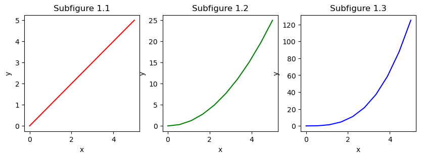
Note also that the above figure has overlapping figures and labels for the y-axis. To deal with that, we can use fig.tight_layout method, which automatically adjusts the positions of the axes on the figure canvas so that there is no overlapping content.
fig, axes = plt.subplots(nrows=1, ncols=2)
for ax in axes:
ax.plot(x, x**2, 'r')
ax.set_xlabel('x')
ax.set_ylabel('y')
ax.set_title('title')
fig.tight_layout()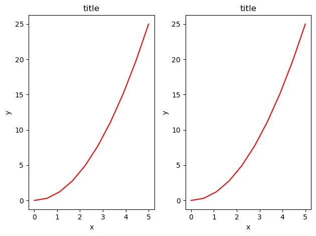
Another way to add sub-figures in Matplotlib is by using the subplot2grid function, which allows to specify the length of the span of the subplots across columns or rows.
fig = plt.figure()
ax1 = plt.subplot2grid((3,3), (0,0), colspan=3)
ax2 = plt.subplot2grid((3,3), (1,0), colspan=2)
ax3 = plt.subplot2grid((3,3), (1,2), rowspan=2)
ax4 = plt.subplot2grid((3,3), (2,0))
ax5 = plt.subplot2grid((3,3), (2,1))
fig.tight_layout()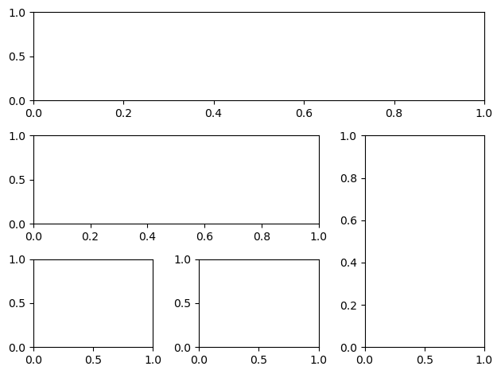
Annotating text in Matplotlib figures can be done using the text function. It supports LaTeX formatting just like axis label texts and titles. Also, the spines function provides control of the appearance of the borders in the figure.
fig, ax = plt.subplots()
ax.spines['right'].set_color('blue')
ax.spines['top'].set_color('red')
ax.spines['left'].set_color('green')
ax.xaxis.set_ticks_position('bottom')
ax.yaxis.set_ticks_position('right')
ax.plot(x, x**2, x, x**3)
ax.text(4, 25, r"$y=x^2$", fontsize=12, color="blue")
ax.text(3.6, 80, r"$y=x^3$", fontsize=12, color="green")
plt.show()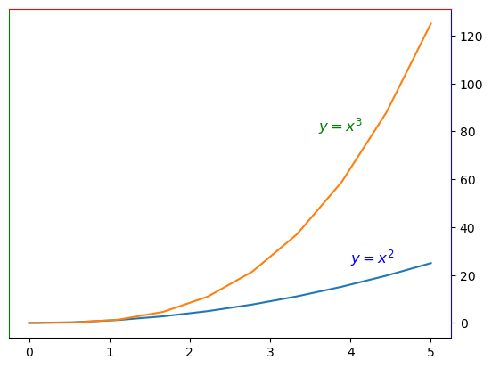
And, here is one more example where sine wave plots are created with different frequencies and amplitudes.
def create_sine_wave(timepoints, frequency=1, amplitude=1):
""" Creates a sine wave with a given frequency and amplitude for a given set of timepoints.
Parameters
----------
timepoints : list
A list with timepoints (assumed to be in seconds)
frequency : int/float
Desired frequency (in Hz.)
amplitude : int/float
Desired amplitude (arbitrary units)
Returns
-------
sine : list
A list with floats representing the sine wave
"""
sine = [amplitude * math.sin(2 * math.pi * frequency * t) for t in timepoints]
return sine
import math
timepoints = [i / 100 for i in range(500)]
# in the next line, sharex=True and sharey=True are used to force the same range across subplots
fig, axes = plt.subplots(ncols=3, nrows=3, figsize=(10, 10), sharex=True, sharey=True)
amps = [1, 2, 4]
freqs = [1, 3, 5]
for i in range(len(amps)):
for ii in range(len(freqs)):
sine = create_sine_wave(timepoints, frequency=freqs[ii], amplitude=amps[i])
axes[i, ii].plot(timepoints, sine)
axes[i, ii].set_title(f"Freq = {freqs[ii]}, amp = {amps[i]}")
axes[i, ii].set_xlim(0, max(timepoints))
if ii == 0:
axes[i, ii].set_ylabel("Activity", fontsize=12)
if i == 2:
axes[i, ii].set_xlabel("Time", fontsize=12)
fig.tight_layout()
plt.show()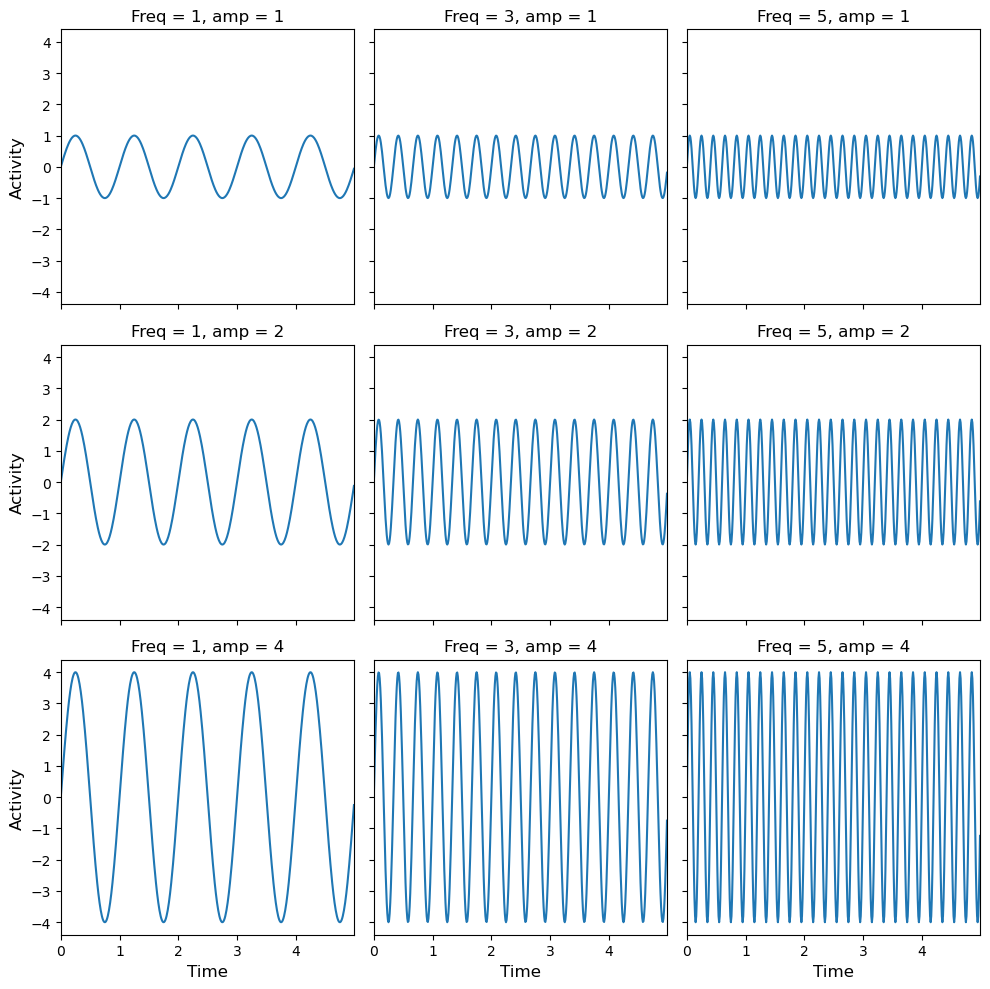
7.2 Data Visualization with Seaborn
7.2.1 Introduction to Seaborn
Seaborn is a Python library for data visualization that provides an interface for drawing plots and conducting data exploration via visualization and informative graphics. Internally, Seaborn uses Matplotlib to create the plots, therefore it can be considered a high-level interface for Matplotlib which allows to quickly and easily customize our plots.
For more information please visit the official website. Examples of plots created with Seaborn can be found in the gallery page.
By convention, Seaborn is imported as sns. The name Seaborn was originally based on a character named Samuel Norman Seaborn from a television show, and the alias sns is based on the character’s initials.
To explain the functionality of Seaborn, in this lecture we will use the following four datasets: titanic, fmri, tips, and flights, which can be loaded directly as DataFrames from the Seaborn datasets.
The first few rows of these datasets are shown below.
# Import libraries
import seaborn as sns
import numpy as np
import pandas as pd
import matplotlib.pyplot as plt
# Loading the datasets for this lecture
titanic = sns.load_dataset('titanic')
fmri = sns.load_dataset('fmri')
tips = sns.load_dataset('tips')
flights = sns.load_dataset('flights')titanic.head(3)| survived | pclass | sex | age | sibsp | parch | fare | embarked | class | who | adult_male | deck | embark_town | alive | alone | |
|---|---|---|---|---|---|---|---|---|---|---|---|---|---|---|---|
| 0 | 0 | 3 | male | 22.0 | 1 | 0 | 7.2500 | S | Third | man | True | NaN | Southampton | no | False |
| 1 | 1 | 1 | female | 38.0 | 1 | 0 | 71.2833 | C | First | woman | False | C | Cherbourg | yes | False |
| 2 | 1 | 3 | female | 26.0 | 0 | 0 | 7.9250 | S | Third | woman | False | NaN | Southampton | yes | True |
fmri.head(3)| subject | timepoint | event | region | signal | |
|---|---|---|---|---|---|
| 0 | s13 | 18 | stim | parietal | -0.017552 |
| 1 | s5 | 14 | stim | parietal | -0.080883 |
| 2 | s12 | 18 | stim | parietal | -0.081033 |
tips.head(3)| total_bill | tip | sex | smoker | day | time | size | |
|---|---|---|---|---|---|---|---|
| 0 | 16.99 | 1.01 | Female | No | Sun | Dinner | 2 |
| 1 | 10.34 | 1.66 | Male | No | Sun | Dinner | 3 |
| 2 | 21.01 | 3.50 | Male | No | Sun | Dinner | 3 |
flights.head(3)| year | month | passengers | |
|---|---|---|---|
| 0 | 1949 | Jan | 112 |
| 1 | 1949 | Feb | 118 |
| 2 | 1949 | Mar | 132 |
7.2.2 Relational Plots
Relational plots are used to visualize the statistical relationship between the features in a dataset.
We will provide examples using the following relational plots in Seaborn:
- Line Plots
- Scatter Plots
Line Plots
Line plots can be created in Seaborn by using the function relplot(), with the kind parameter set to line. Similarly, setting the kind to scatter is used for creating scatter plots. In general, relplot() is a flexible function that allows to visualize different relational plots between the features.
In the figure below, we used the flights dataset, and plotted the feature month along the x-axis and the passenger along the y-axis. The plot also calculates the confidence intervals and draws error bars representing the uncertainty for the number of passengers per month. Many plotting functions in Seaborn use statistical estimators to plot data statistics by default.
Note also that when we create Seaborn plots in Jupyter notebooks, the figure object information is displayed above the plot, in this case <seaborn.axisgrid.FacetGrid at 0x20dd5e50810>. The same is true for Matplotlib plots, as they also return the figure object information in Jupyter notebooks. We can suppress the text by either adding plt.show() in the cells, or by adding a semicolon to the last line in the cells. We will add a semicolon for all plots in this lecture to suppress the text for the figure objects.
sns.relplot(data=flights, x='month', y='passengers', kind='line')
# Use either 'plt.show()' or add a semicolon to suppress the returned text above the plot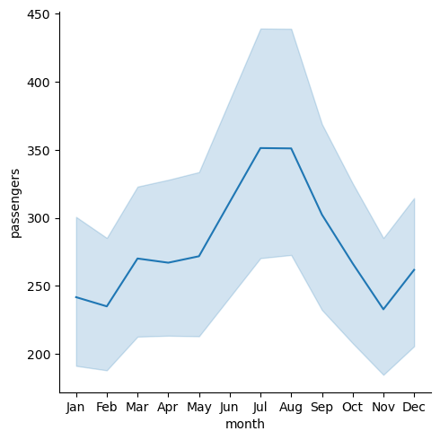
And another plot shows the number of passengers per year.
sns.relplot(data=flights, x='year', y='passengers', kind='line');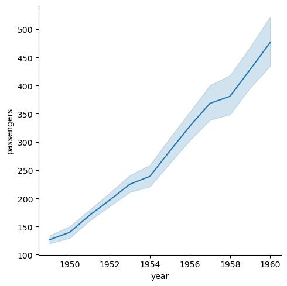
We can remove the drawn error bars for the confidence intervals by setting the parameter errorbar=None. In the older versions of Seaborn this was controlled by the parameter ci. Therefore using ci=None still works, but it will produce a warning that ci has been deprecated.
Similarly, by setting style="darkgrid" in set_theme() we indicate to set the background in the plot to a shade of dark, and to show the grid. By applying a theme with set_theme() we can control the appearance of all next plots.
sns.set_theme(style="darkgrid") # show the grid for all next plots on a dark background
sns.relplot(data=flights, x='month', y='passengers', errorbar=None, kind='line');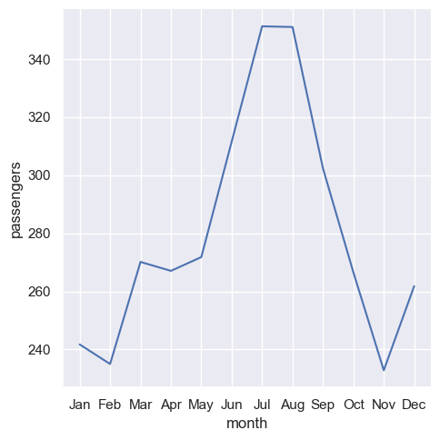
If we set the confidence interval to errorbar=sd, the standard deviation for the x-axis values will be shown in the plot.
sns.relplot(data=flights, x='month', y='passengers', errorbar='sd', kind='line');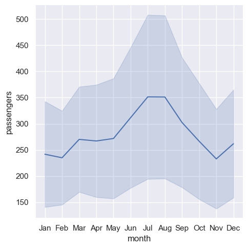
By default, relplot() employs a statistical estimator to aggregate the values and display the average values on the y-axis (e.g., average number of passengers per month). If we would like to see all values on the y-axis instead of the average values, we can set the parameter estimator=None.
sns.relplot(data=flights, x='month', y='passengers', errorbar=None, estimator=None, kind='line');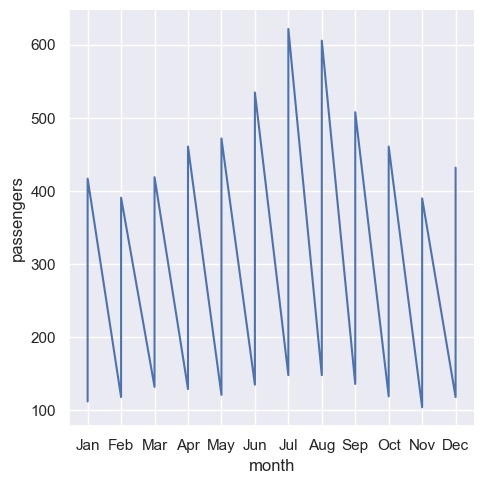
We can plot multiple lines in a figure by setting the hue parameter to another feature in the dataset.
sns.relplot(data=fmri, x='timepoint', y='signal', hue='event', kind='line');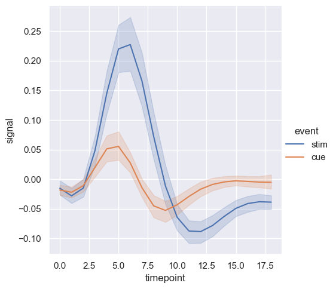
The parameter style allows to vary the appearance of the lines based on a specified feature (in the next cell, based on the feature event). Seaborn will automatically assign a different line style (e.g., dashed line) to each category in the feature event. In this case, there are two categories: stim and cue.
sns.relplot(data=fmri, x='timepoint', y='signal', hue='event', kind='line', style='event');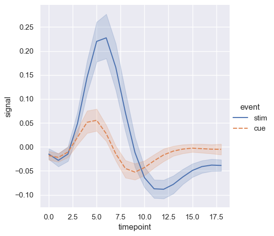
To highlight the differences between the categories in hue, we can use markers=True to add markers for the data points.
sns.relplot(data=fmri, x='timepoint', y='signal', hue='event', kind='line',
style='event', dashes=False, markers=True);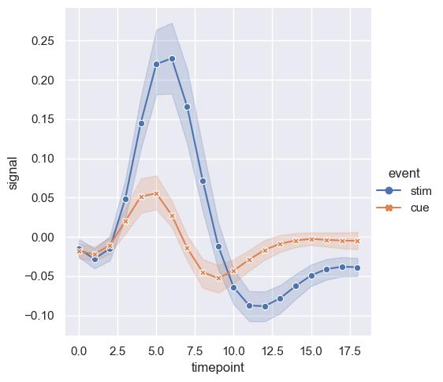
And, we can plot multiple relationships by introducing a parameter col to create multiple columns, or we can also introduce multiple rows with the row parameter, as in the following cell below.
sns.relplot(data=tips, x='total_bill', y='tip', hue='smoker', col='time');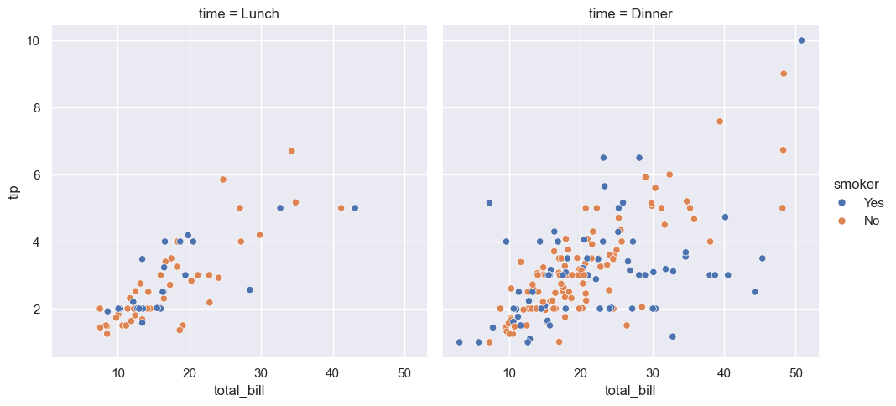
sns.relplot(data=fmri, x='timepoint', y='signal', hue='subject',
col='region', row='event', height=4, kind='line');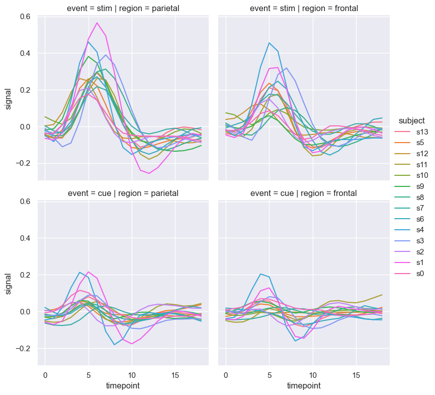
Scatter Plots
We can create scatter plots in Seaborn by using either sns.scatterplot() or sns.relplot() with the kind argument set to "scatter" as in the following cell.
sns.relplot(data=titanic, x='age', y='fare', kind='scatter');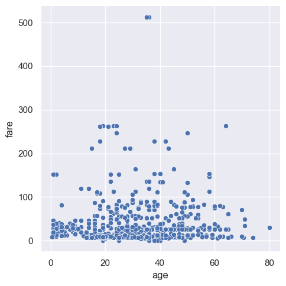
Similar to line plots, the hue parameter distinguishes the data points in the plot based on another feature.
sns.scatterplot(data=titanic, x='age', y='fare', hue='sex');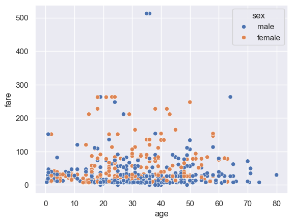
To highlight the difference between the categories in hue, we can add different marker styles with style='sex'.
sns.scatterplot(data=titanic, x='age', y='fare', hue='sex', style='sex');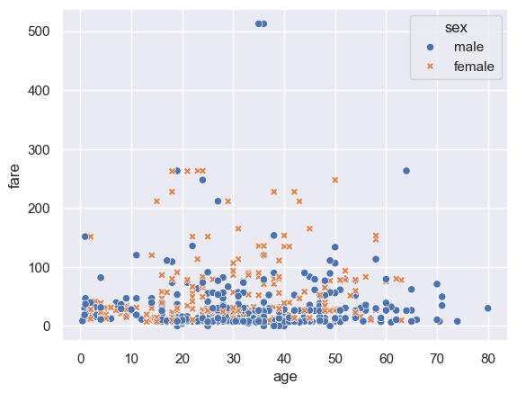
Recall that the default size of figures in Matplotlib is 6.4 by 4.8 inches. The same applies to Seaborn, and similar to Matplotlib, to specify the figure size, we can use figure(figsize=(width, height)).
plt.figure(figsize=(8,6))
sns.scatterplot(data=titanic, x='age', y='fare', hue='sex', style='pclass');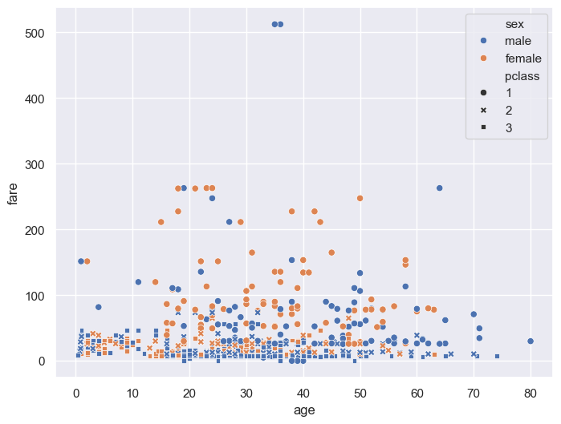
We can also define the type of markers to use with the parameter markers.
# P(plus), X (cross), and D (diamond) markers
sns.scatterplot(data=titanic, x='age', y='fare', hue='sex', style='pclass', markers={1:'P', 2:'X', 3:'D'});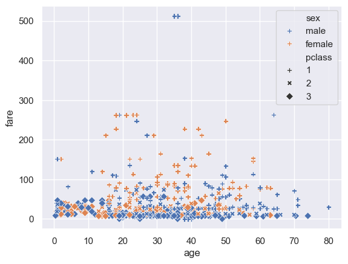
Adding the parameter sizes can make the plot more meaningful, as Seaborn will use sizes to control the size of the markers in the plot. In this case, the size of the markers for pclass=1 is assigned 100, the size of pclass=3 is assigned 10, and the size of pclass=2 is 55.
sns.scatterplot(data=titanic, x='age', y='fare', hue='pclass', size='pclass', sizes=(100,10));7.2.3 Distributional Plots
Distributional plots visualize the distribution of data features, and can help understand the range of values, their central tendency, potential skewness in the data, presence of outliers, and other data characteristics.
Distribution plot functions in Seaborn include:
displot()histplot()jointplot()pairplot()rugplot()kdeplot
Univariate Analysis with displot()
Univariate analysis explores the characteristics of a single feature in a data set in isolation. It involves studying the range of values, central tendency of the values, and other statistical properties of the feature. Univariate analysis typically employs histograms, bar plots, box plots, and other related plots for presenting the distribution of an individual feature.
In Seaborn, the displot() function is a general function for plotting different distributional plots. Its default behavior is to draw a histogram, and internally displot() uses the histplot() function to draw histograms. By changing the parameter kind in displot(), we can create different distributional plots.
sns.displot(titanic['age']);We can set the number of bins in histograms to a value of choice. Similarly, if we set the parameter kde which stands for Kernel Density Estimator (KDE) to True, a KDE plot will be overlaid on top of the histogram. KDE is a smoothed curve representation of the probability density function of the data. It uses a Gaussian kernel to smooth the data distribution.
sns.displot(titanic['age'], kde=True, bins=20);We can also plot categorical data with histograms, in which case the histograms become bar plots. The parameter shrink in the next cells has a value between 0 and 1 and controls the width of the bars in the plot. Compare the following two cells.
sns.displot(tips, x='day', shrink=0.8);sns.displot(tips, x='day', shrink=0.2);We can also use histplot() to draw histograms.
sns.histplot(titanic, x='age', hue='survived');We can stack histograms of multiple features by setting the parameter multiple to 'stack'.
sns.histplot(titanic, x='age', hue='survived', multiple='stack');Bivariate Analysis with jointplot()
Bivariate analysis explores the relationship and patterns among two variables, or two features in a dataset. The goal is to understand how changes in one variable are related to changes in another variable. Common plots in bivariate analysis include scatter plots and correlation plots.
In Seaborn, we can use jointplot() to plot the joint distribution between two features along with the marginal distribution for each of the features. This function creates multi-panel plots, and it provides useful statistical visualization for any two features in a dataset.
The joint distribution drawn in the central plot displays the simultaneous behavior of the two features as they both change, i.e., it provides information about the probability of different combinations of values for the two features.
The marginal distribution plots are shown on the side axes, and they present the distribution of each feature when considered independently by ignoring or “marginalizing out” the other feature. I.e., they show the histogram for numerical features or the bar plot for categorical features.
sns.jointplot(data=tips, x='total_bill', y='tip');In the function jointplot(), the following options for the parameter kind are available:
scatter(default) displays a scatter plothexdisplays a hexagonal binning style to visualize the densitykdedisplays kernel density estimatesregdisplays a scatter plot with a linear regression lineresiddisplays the residuals of a linear regression, useful for checking goodness of fit
sns.jointplot(data=tips, x='total_bill', y='tip', kind='hex');sns.jointplot(data=tips, x='total_bill', y='tip', hue='day', kind='kde');sns.jointplot(data=tips, x='total_bill', y='tip', kind='reg');sns.jointplot(data=tips, x='total_bill', y='tip', kind='resid');Multivariate Analysis with pairplot()
Multivariate analysis explores relationships and dependencies among multiple features in a dataset, in order to reveal complex interactions between more several features.
The function pairplot() visualizes all possible joint and marginal distributions for all pairwise relationships and for each variable in datasets. It allows to immediately notice relationships between the features.
In particular, pairplot() creates a grid of subplots, where the diagonal subplots are the marginal distributions of each feature (i.e., histograms for numerical features and bar plots for categorical features), and the off-diagonal subplots draw the pairwise joint distributions between different pairs of features.
Note the difference: while jointplot() visualizes the relationship between two features (bivariate analysis), pairplot() visualizes the pairwise relationships between all features in a dataset (muliivariate analysis).
sns.pairplot(tips);Plotting Distributions with rugplot()
The function rugplot() visualizes marginal distributions by drawing ticks or dashes along the x-axis and/or y-axis in a plot. It consists of short vertical ‘ticks’ where each tick shows the presence of a data point at that value on the axis. This plot is useful for showing the density of data points along an axis.
The ticks in the plot resemble the appearance of a rug, therefore, it is named a rug plot.
sns.rugplot(data=tips, x='total_bill', y='tip');Similarly, we can combine relplot() and rugplot() in one figure.
sns.relplot(data=tips, x='total_bill', y='tip')
sns.rugplot(data=tips, x='total_bill', y='tip');Kernel Density Estimation (KDE) Plot with kdeplot()
Besides using the kde parameter with displot(), Seaborn also provides the function kdeplot() to visualize the smoothed curve of the probability density function of a single feature or multiple features.
sns.kdeplot(data=tips, x='tip');sns.kdeplot(data=tips, x='tip', hue='day');
sns.kdeplot(data=tips, x='tip', hue='day', fill=True);sns.kdeplot(data=tips, x='tip', hue='day', multiple='stack');Cumulative Distributions
By setting the parameter kind in displot() to ecdf, we can plot the cumulative distribution of a feature, where ecdf stands for empirical cumulative distribution function.
sns.displot(titanic, x='age', kind='ecdf');7.2.4 Categorical Plots
In Seaborn, there are various plot functions for visualizing categorical data. These include:
- Categorical estimate plots
barplot()countplot()pointplot()
- Categorical distribution plots
boxplot()boxenplot()violinplot()
- Categorical scatter plots
stripplot()swarmplot()
Similar to the high-level function displot() for creating distribution plots, Seaborn also provides a high-level function catplot() for plotting all of the above types of categorical plots, by passing different values for the kind parameter. The available settings include: bar, count, point, box, boxen, violin, strip, and swarm.
Categorical Estimate Plots
The function barplot() is used to visualize statistics of categorical data based on different statistical estimator functions (mean is the default estimate). As stated earlier, to create bar plots we can either use barplot() or catplot(..., kind='bar').
sns.catplot(data=titanic, x='sex', y='survived', hue='pclass', kind='bar');The function countplot() is used to visualize the number of observations in each category.
sns.countplot(data=tips, x='day', hue='day', palette='coolwarm');
# The same plot can be obtained with
#sns.catplot(data=tips, x='day', palette='coolwarm', kind='count')Rather than plotting bars, the function pointplot() visualizes the point estimates of categorical data. Notice that it can also connect the points with the categorical variable specified with hue.
sns.pointplot(data=titanic, x='sex', y='survived', hue='class', palette='dark');Categorical Distribution Plots
The functions boxplot(), boxenplot(), and violinplot() are used to plot the distributions of categorical data.
A box plot (or box-and-whisker plot) shows the median, the inter-quartile range with the first (25%) and third (75%) quartiles of the dataset, and the whiskers extend to show the rest of the distribution. Exceptions are data points that are determined to be outliers based on a method that is a function of the inter-quartile range.
sns.boxplot(data=tips, x='day', y='total_bill');sns.catplot(data=tips, x='day', y='total_bill', hue='smoker', kind='box');The kind parameter set to boxenplot creates boxen plots, which are an enhanced version of box plots. Boxen plots employ additional steps for calculating the quartiles, and are more efficient in visualizing features that have many outliers.
The approach for creating boxen plots includes first dividing the data into groups and then iteratively constructing the plot by starting with the largest group and data and progressing to the smallest group of data. The boxes can be considered subgroups of data, with the width and height corresponding to the size and range of the data in the groups. Therefore, the boxes do not correspond to the first and third quartiles, as in traditional box plots.
sns.catplot(data=tips, x='day', y='total_bill', hue='smoker', kind='boxen');The function violinplot() shows the entire distribution of categorical data and uses a rotated kernel density plot on both the right and left sides of the plots. Understandably, the plots resemble violins, and they make it easier to visualize the shape, skewness, and presence of multiple peaks in the data distribution. Unlike box plots and boxen plots, violin plots do not display the individual outliers in the data.
sns.violinplot(data=tips, x='day', y='total_bill', hue='day', palette='autumn');Categorical Scatter Plots
The functions stripplot() and swarmplot() visualize categorical data with scatter plots.
In a stripplot() the data points are shown in a strip, whereas in a swarmplot() the data are randomly shifted horizontally to avoid overlaps. Strip plots are simpler and can be used to see the exact positions of data points, and swarm plots resemble a swarm of bees and they make it easier to see the distribution of the data points.
sns.stripplot(data=tips, x='day', y='total_bill', jitter=False);sns.swarmplot(data=tips, x='day', y='total_bill');Also, when using catplot(), the parameter strip is the default value of the kind parameter.
sns.catplot(data=tips, x='total_bill', y='day', hue='sex', kind='swarm');Plotting Multiple Categorical Plots
We can plot multiple plots with catplot() by setting the parameters col or row to a data feature.
sns.catplot(data=tips, x='day', y='total_bill', hue='smoker', col='time', kind='swarm');7.2.5 Regression Plots
Seaborn provides plots for visualizing the linear relationship between the features. The functions regplot() and lmplot() can be used for fitting a linear regression model, where lm stands for linear model.
For instance, the figure below shows the regression line, as well as the uncertainty in the predicted values corresponding to 95% confidence interval for the regression fit with lmplot().
sns.lmplot(data=tips, x='total_bill', y='tip');sns.lmplot(data=tips, x='total_bill', y='tip', hue='sex');If one of the features is a categorical variable (e.g., survived in the next example), linear regression models may not produce good results, and an alternative is to apply a logistic regression model by using logistic=True. The regression line shown the estimated probability of the variable y=1 for a given value of x.
The function lmplot() also allows to add jitter to the data in the scatter plot by using the y_jitter parameter, in order to better visualize the values. Jitter is applied only to the scatter plot, and it is not applied to the data for fitting the regression model.
In the plot below, the regression lines indicate that the probablity of men to survive decreased with age, whereas the probability of women to survive increased with age.
sns.lmplot(data=titanic, x='age', y='survived', logistic=True, y_jitter=0.05, hue='sex');If the relationship between two features is not linear, the function lmplot() can also fit a polynomial regression model to identify nonlinear trends in the dataset by using the parameter order. E.g., order=2 in the next cell fits a second-degree polynomial regression model.
sns.lmplot(data=tips, x='total_bill', y='tip', hue='sex', order=2);As we explained in the above sections, we can create subplots by setting the parameters col and row to specific data features.
sns.lmplot(data=tips, x='total_bill', y='tip', hue='smoker', col='time', row='sex');7.2.6 Multiple Plots
Multiple plot functions in Seaborn are used to visualize multiple features along different axes. Seaborn provides the following functions:
FacetGrid()PairGrid()PairPlot()
FacetGrid()
The function FacetGrid() creates multiple grid plots and allows plotting the features on row and column axes in order to visualize the relationship between multiple features in separate subplots. It allows to draw a grid based on three parameters: col, row, and hue, where hue allows to draw different categories in a subplot with separate colors.
After the grid is created with FacetGrid(), visualizations are added with the map() method that specifies the plot type (such as scatter, histogram, bar plot, etc.).
plot = sns.FacetGrid(tips, col='sex', hue='smoker')plot = sns.FacetGrid(tips, col='sex', hue='smoker')
plot.map(sns.scatterplot,'total_bill', 'tip')
plot.add_legend();FacetGrid() allows to control the height, aspect ratio, and other properties of the subplots in the grid.
plot = sns.FacetGrid(tips, col='day', height=5, aspect=0.5)
plot.map(sns.barplot, 'sex', 'total_bill', order=['Male', 'Female']);PairGrid()
The function PairGrid() allows to plot pairwise relationships between the features in the dataset. It is similar to the function pairplot() that we saw earlier for multivariate data analysis.
An example is shown next, where PairGrid creates a grid of subplots by assigning each row and column to a different feature in the dataset. Since the tips dataset has three numerical columns, the created grid is of 3x3 size.
Note also the difference between FacetGrid() and PairGrid(). FacetGrid()shows the same relationship between two features, conditioned on different categories of other features. E.g., in the above example, all subplots show the scatter plots of total_bill and tip, conditioned on the features sex and smoker. PariGrid() shows different relationships between the features in the subplots.
plot = sns.PairGrid(tips, hue='sex')
plot.map(sns.scatterplot)
plot.add_legend();With PairGrid(), we can also be selective on the type of plots to include in diagonal subplots with map_diag and in the off-diagonal subplots (e.g., map_upper for the upper off-diagonal subplots and map_lower for the lower off-diagonal subplots).
plot = sns.PairGrid(tips)
plot.map_diag(sns.histplot)
plot.map_upper(sns.scatterplot)
plot.map_lower(sns.kdeplot)
plot.add_legend();Also, instead of plotting all features in a dataset, we can select the features we are interested in.
plot = sns.PairGrid(tips, vars=['total_bill', 'tip'], hue='day')
plot.map(sns.scatterplot)
plot.add_legend();pairplot()
The function pairplot() is very similar to PairGrid(), and it allows to plot pairwise relationships between the features in a dataset. It provides faster plotting in comparison to PairGrid() but it also offers less functionality.
sns.pairplot(tips, hue='sex');7.2.7 Matrix Plots
When performing data analysis, in some cases it is beneficial to visualize array data as color-encoded matrices that can be used to find patterns within the data.
Heat Maps
The function heatmap() in Seaborn adds colors to the elements in a matrix, and attaches a color bar to the plot.
Let’s visualize a matrix with random values.
sns.set_theme()
data = np.random.randn(10,15)
sns.heatmap(data);Or, if you recall from the previous lecture, we used the .corr() method in pandas to calculate the correlation between the features, and afterward we used heatmap to visualize the correlations. By applying colors that correspond to the correlation values, it makes it easier to identify relationships between the features.
# Correlation of numerical features in titanic dataset
correlation = titanic.corr(numeric_only=True)
correlation| survived | pclass | age | sibsp | parch | fare | adult_male | alone | |
|---|---|---|---|---|---|---|---|---|
| survived | 1.000000 | -0.338481 | -0.077221 | -0.035322 | 0.081629 | 0.257307 | -0.557080 | -0.203367 |
| pclass | -0.338481 | 1.000000 | -0.369226 | 0.083081 | 0.018443 | -0.549500 | 0.094035 | 0.135207 |
| age | -0.077221 | -0.369226 | 1.000000 | -0.308247 | -0.189119 | 0.096067 | 0.280328 | 0.198270 |
| sibsp | -0.035322 | 0.083081 | -0.308247 | 1.000000 | 0.414838 | 0.159651 | -0.253586 | -0.584471 |
| parch | 0.081629 | 0.018443 | -0.189119 | 0.414838 | 1.000000 | 0.216225 | -0.349943 | -0.583398 |
| fare | 0.257307 | -0.549500 | 0.096067 | 0.159651 | 0.216225 | 1.000000 | -0.182024 | -0.271832 |
| adult_male | -0.557080 | 0.094035 | 0.280328 | -0.253586 | -0.349943 | -0.182024 | 1.000000 | 0.404744 |
| alone | -0.203367 | 0.135207 | 0.198270 | -0.584471 | -0.583398 | -0.271832 | 0.404744 | 1.000000 |
sns.heatmap(correlation);If we want to add the values to the heat map, we can set the parameter annot to True.
sns.heatmap(correlation, annot=True);7.2.8 Styles, Themes, and Colors
Seaborn allows to customize the visualizations depending on our needs, and provides ways to control the styles, themes, and colors in our plots.
Styles and Themes
There are five styles in Seaborn plots:
darkgrid(default) provides a dark background with grid lineswhitegridprovides a white background with grid linesdarkprovides a dark background without grid lineswhiteprovides a white background without grid linesticksprovides a light gray background with tick marks on the axes
sns.set_style('whitegrid')
sns.catplot(data=tips, x='day', y='total_bill', kind='bar');sns.set_style('dark')
sns.catplot(data=tips, x='day', y='total_bill', kind='box');sns.set_style('white')
sns.catplot(data=tips, x='day', y='total_bill', kind='boxen');sns.set_style('ticks')
sns.catplot(data=tips, x='day', y='total_bill', kind='box');Removing the Axes Spines
We can use the function despine() to remove the axes spines (borders) in the plots, or to show the spines by setting them to False.
sns.catplot(data=tips, x='day', y='total_bill', kind='box')
sns.despine(right=False);We can also move the spines away from the data by setting the offset distance that spines should move away from the axes.
sns.catplot(data=tips, x='day', y='total_bill', kind='violin')
sns.despine(offset=10, trim=True);Scaling Plot Elements with Context
Context is used to control the scale of the elements of the plot. This can be helpful depending on where we want to use the visualizations.
The function set_context() allows to select four contexts: paper, notebook (default), talk, and poster.
sns.set_theme()sns.set_context('paper')
sns.kdeplot(data=tips, x='tip', hue='day');sns.set_context('talk')
sns.kdeplot(data=tips, x='tip', hue='day');sns.set_context('poster')
sns.kdeplot(data=tips, x='tip', hue='day');sns.set_context('notebook')
sns.kdeplot(data=tips, x='tip', hue='day');Colors
Seaborn allows us to choose colors from a wide range of color palettes for plot visualization.
To specify preferred colors, we can either use color_palette() before each plot, or set the parameter palette inside the plot definition.
sns.set_palette('rocket')
sns.kdeplot(data=tips, x='tip', hue='day', multiple='stack');sns.kdeplot(data=tips, x='tip', hue='day', multiple='stack', palette='icefire');To see the available color palettes, check out the Seaborn documentation.
# Check the palettes
sns.color_palette('tab10')sns.color_palette('dark')Also, we can use sns.set_theme() to directly set the style, palette, and context.
sns.set_theme(style='white', context='talk', palette='viridis')
sns.kdeplot(data=tips, x='tip', hue='day', multiple='stack');Appendix: Additional Matplotlib Features
The material in the Appendix is not required for quizzes and assignments.
Formatting Text in Matplotlib with LaTeX
Matplotlib has great support for LaTeX, by using dollar signs to encapsulate LaTeX in any text, such as legend, title, label, etc. (for example, "$y=x^3$").
However, we can run into a slight problem with LaTeX code and Python text strings. In LaTeX, we frequently use the backslash in commands, for example \alpha to produce the symbol \(\alpha\). But the backslash already has a meaning in Python strings (the escape code character). To avoid problems in Python with Latex code, we need to use “raw” text strings that are prepended with an ‘r’, like r"\alpha" instead of "\alpha".
fig, ax = plt.subplots()
ax.plot(x, x**2, label=r"$y = \alpha^2$")
ax.plot(x, x**3, label=r"$y = \alpha^3$")
ax.legend(loc='upper left')
ax.set_xlabel(r'$\alpha$', fontsize=18)
ax.set_ylabel(r'$y$', fontsize=18)
ax.set_title('Title of Appendix Figure');We can also change the global font size and font family, which applies to all text elements in a figure (tick labels, axis labels and titles, legends, etc.).
import matplotlib
# Update the matplotlib configuration parameters:
matplotlib.rcParams.update({'font.size': 18, 'font.family': 'serif'})fig, ax = plt.subplots()
ax.plot(x, x**2, label=r"$y = \alpha^2$")
ax.plot(x, x**3, label=r"$y = \alpha^3$")
ax.legend(loc=2) # upper left corner
ax.set_xlabel(r'$\alpha$')
ax.set_ylabel(r'$y$')
ax.set_title('Title of Appendix Figure');And, we can restore the font and font size back to the defaults.
# restore
matplotlib.rcParams.update({'font.size': 12, 'font.family': 'sans'})Colormap and Contour Figures
Colormaps and contour figures are useful for plotting functions of two variables. In most of these functions we will use a colormap to encode one dimension of the data. There are a number of predefined colormaps, and it is relatively straightforward to define custom colormaps.
The following cell defines a two-dimensional function, and afterward, plotting the colormap is illustrated with: pcolor, imshow, and contour. The function fig.colorbar is used to add a colorbar.
# Create a two dimensional function
phi_m = np.linspace(0, 2*np.pi, 100)
phi_p = np.linspace(0, 2*np.pi, 100)
alpha = 0.7
phi_ext = 2 * np.pi * 0.5
def flux_qubit_potential(phi_m, phi_p):
return 2 + alpha - 2 * np.cos(phi_p) * np.cos(phi_m) - alpha * np.cos(phi_ext - 2*phi_p)
X,Y = np.meshgrid(phi_p, phi_m)
Z = flux_qubit_potential(X, Y).Tpcolor
fig = plt.figure()
ax = fig.add_axes([0, 0, 0.8, 0.8])
p = ax.pcolor(X/(2*np.pi), Y/(2*np.pi), Z, cmap=matplotlib.cm.RdBu, vmin=abs(Z).min(), vmax=abs(Z).max())
cb = fig.colorbar(p, ax=ax)imshow
fig = plt.figure()
ax = fig.add_axes([0, 0, 0.8, 0.8])
im = ax.imshow(Z, cmap=matplotlib.cm.RdBu, vmin=abs(Z).min(), vmax=abs(Z).max(), extent=[0, 1, 0, 1])
im.set_interpolation('bilinear')
cb = fig.colorbar(im, ax=ax)contour
fig = plt.figure()
ax = fig.add_axes([0, 0, 0.8, 0.8])
cnt = ax.contour(Z, cmap=matplotlib.cm.RdBu, vmin=abs(Z).min(), vmax=abs(Z).max(), extent=[0, 1, 0, 1])3D Figures
To use 3D graphics in Matplotlib, we first need to create an instance of the Axes3D class. 3D axes can be added to a matplotlib figure in exactly the same way as 2D axes. Or, they can be added by passing a projection='3d' keyword argument to the add_axes or add_subplot methods.
from mpl_toolkits.mplot3d.axes3d import Axes3DSurface plots
fig = plt.figure(figsize=(14,6))
# `ax` is a 3D-aware axis instance because of the projection='3d' keyword argument to add_subplot
ax = fig.add_subplot(1, 2, 1, projection='3d')
p = ax.plot_surface(X, Y, Z, rstride=4, cstride=4, linewidth=0)
# surface_plot with color grading and color bar
ax = fig.add_subplot(1, 2, 2, projection='3d')
p = ax.plot_surface(X, Y, Z, rstride=1, cstride=1, cmap=matplotlib.cm.coolwarm, linewidth=0, antialiased=False)
cb = fig.colorbar(p, shrink=0.5)Wire-frame plot
fig = plt.figure(figsize=(8,6))
ax = fig.add_subplot(1, 1, 1, projection='3d')
p = ax.plot_wireframe(X, Y, Z, rstride=4, cstride=4)Contour plots with projections
fig = plt.figure(figsize=(8,6))
ax = fig.add_subplot(1,1,1, projection='3d')
ax.plot_surface(X, Y, Z, rstride=4, cstride=4, alpha=0.25)
cset = ax.contour(X, Y, Z, zdir='z', offset=-np.pi, cmap=matplotlib.cm.coolwarm)
cset = ax.contour(X, Y, Z, zdir='x', offset=-np.pi, cmap=matplotlib.cm.coolwarm)
cset = ax.contour(X, Y, Z, zdir='y', offset=3*np.pi, cmap=matplotlib.cm.coolwarm)
ax.set_xlim3d(-np.pi, 2*np.pi);
ax.set_ylim3d(0, 3*np.pi);
ax.set_zlim3d(-np.pi, 2*np.pi);Change the view angle
We can change the perspective of a 3D plot using the view_init method, which takes two arguments: elevation and azimuth angle (in degrees).
fig = plt.figure(figsize=(12,6))
ax = fig.add_subplot(1,2,1, projection='3d')
ax.plot_surface(X, Y, Z, rstride=4, cstride=4, alpha=0.25)
ax.view_init(30, 45)
ax = fig.add_subplot(1,2,2, projection='3d')
ax.plot_surface(X, Y, Z, rstride=4, cstride=4, alpha=0.25)
ax.view_init(70, 30)
fig.tight_layout()References
- Matplotlib - Pyplot Tutorial, available at: https://matplotlib.org/2.0.2/users/pyplot_tutorial.html.
- Lectures on Scientific Computing with Python, Robert Johansson, available at: https://github.com/jrjohansson/scientific-python-lectures/blob/master/Lecture-4-Matplotlib.ipynb.
- Introduction to Matplotlib (tutorial), by Lukas Snoek, available at: https://lukas-snoek.com/introPy/solutions/week_1/2_matplotlib.html.
- Matplotlib - An Intro to Creating Graphs with Python, Mike Driscol, available at: https://www.blog.pythonlibrary.org/2021/09/07/matplotlib-an-intro-to-creating-graphs-with-python/.
- Scientific Computing in Python: Introduction to NumPy and Matplotlib, by Sebastian Raschka, available at: https://sebastianraschka.com/blog/2020/numpy-intro.html.
- Python Tutorial, Visualization with Matplotilb, available at: https://github.com/zhiyzuo/python-tutorial/blob/master/4-Visualization-with-Matplotlib.ipynb.
- Numpy, Pandas, Matplotlib Tutorial, available at https://github.com/veb-101/Numpy-Pandas-Matplotlib-Tutorial.
- Complete Machine Learning Package, Jean de Dieu Nyandwi, available at: https://github.com/Nyandwi/machine_learning_complete.
- Seaborn Tutorial: An Introduction to Seaborn, available at: https://seaborn.pydata.org/tutorial/introduction.html.